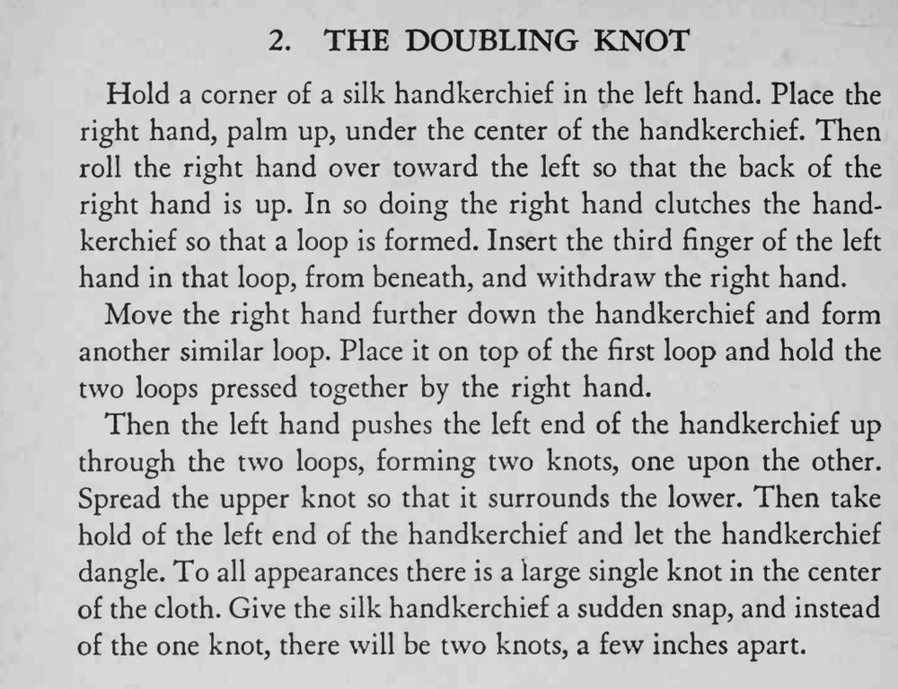

手帕中央明明只打了一个大结，轻轻一抖，却变成相距数英寸的两个结。
两个圈叠放的方向要对，推的时候别让结提前散开。

Hold a corner of a silk handkerchief in the left hand. Place the right hand, palm up, under the center of the handkerchief. Then roll the right hand over toward the left so that the back of the right hand is up. In so doing the right hand clutches the handkerchief so that a loop is formed. Insert the third finger of the left hand in that loop, from beneath, and withdraw the right hand. Move the right hand further down the handkerchief and form another similar loop. Place it on top of the first loop and hold the two loops pressed together by the right hand. Then the left hand pushes the left end of the handkerchief up through the two loops, forming two knots, one upon the other. Spread the upper knot so that it surrounds the lower. Then take hold of the left end of the handkerchief and let the handkerchief dangle. To all appearances there is a large single knot in the center of the cloth. Give the silk handkerchief a sudden snap, and instead of the one knot, there will be two knots, a few inches apart.